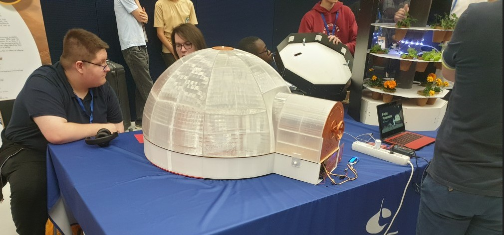
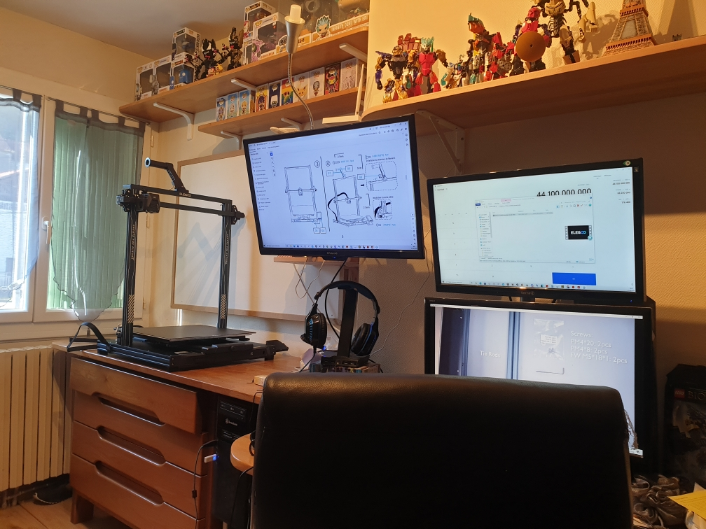
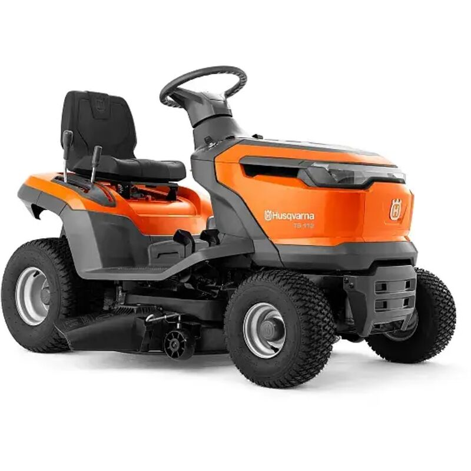

Mes Autres projets
Mes passions et initiatives techniques en dehors des cours

Proximars CNES
Participation au projet éducatif Proximars 2024-2025 (CNES, CNRS, Planète Sciences, Académie de Toulouse). Conception et modélisation d'une maquette de serre martienne.
Découvrir le projet →
CAO et Impression 3D
Création complète de divers objets sur-mesure (modélisation CAO, prototypage par impression 3D, tests et essais, amélioration produit).
Découvrir mes projets 3D→
Lego Mindstorm EV3
Conception mécanique, assemblage et programmation logicielle d'un robot autonome pour relever les défis du concours de robotique Pobot Junior Cup.
Découvrir le projet →
Réparation Tondeuse Autoportée
Démontage, analyse et remise à neuf complète du système de coupe d'une tondeuse autoportée HUSQVARNA LTH 171.
Découvrir le projet →